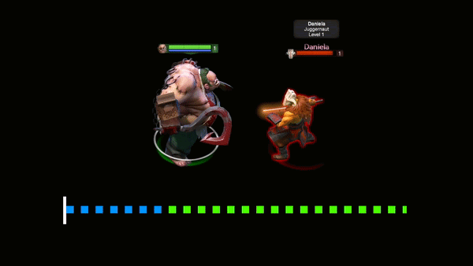

Introduction to Dota 2
This is Dota
- Moving your hero
- Using items
Map
A team is filled with 5 roles, each with a second name:
- Carry/Position 1
- Mid/Position 2
- Offlane/Position 3
- Support/Position 4
- Hard Support/Position 5
Hero Controls
Dealing the killing blow will give you gold. Each hero has their unique attack animation and deal different damage.
Players will have to get use to attacking with their hero to time the attack to be the final hit.

- Full sentient AI
- Discovery One spacecraft
- Likes the color red
User Interface and Attributes
- Full sentient AI
- Discovery One spacecraft
- Likes the color red
Items
- Full sentient AI
- Discovery One spacecraft
- Likes the color red
Skill Points
- Full sentient AI
- Discovery One spacecraft
- Likes the color red
Vision & Warding
- Full sentient AI
- Discovery One spacecraft
- Likes the color red
Runes & Bottle
- Full sentient AI
- Discovery One spacecraft
- Likes the color red
Disables and Status Types
- Full sentient AI
- Discovery One spacecraft
- Likes the color red